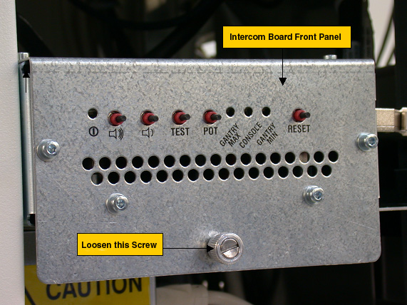
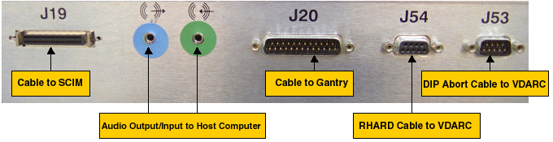
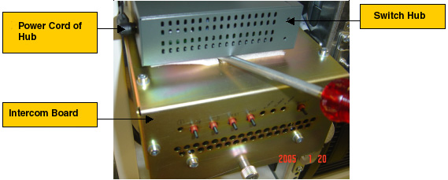

Operating Documentation
Direction 5193575-800, Rev# 5
LightSpeed 7.X Service Information - Adv
Operating Documentation |
| Required Persons | Preliminary Reqs | Procedure | Finalization |
|---|---|---|---|
| 1 | Timing Not Applicable | 1 hour | 20 mins |
This module describes the procedures used to replace the Intercom Board in the GOC5 Console. After the Intercom board has been replaced and, several tests and adjustment are required:
Console and table speaker volume adjustment
Prescribed tilt function test
| Last Revised on: | Jan 25, 2005 |
| Item | Qty | Effectivity | Part# | Manufacturer | |
|---|---|---|---|---|---|
| Medium Phillips Screwdriver | 1 | - | - | - | |
| Item | Qty | Effectivity | Part# | Manufacturer |
|---|---|---|---|---|
| GOC5 Intercom Board | 1 | - | - | - |
| Item | Qty | Effectivity | Part# | Manufacturer | |
|---|---|---|---|---|---|
| GOC5 Intercom Board | 1 | - | - | - | |
| All cable connector screw-locks must be finger-tightened, only. Do NOT use any tool to tighten cable screw-locks. | |
Select one of the following methods to Power OFF the Operator Console:
If Applications are up, click on the [Shut Down] button and select [Shutdown] .
The Operator Console monitor will display a 'Power Down' message when it is acceptable to power OFF the Operator Console.
If Applications are down, open a Unix Shell. Type: halt.
Power OFF the console at the front panel switch.
Illustration 1: Power Switch

Remove the front Operator Console covers.
Loosen the screw located on the front panel of Intercom Board, which secures Intercom Board to the chassis.
| NOTE: | You do not need to remove this screw. |
Illustration 2: Intercom Board Front Panel

Slide the Intercom Board out of the console to approximately half position.
| NOTE: | Be careful of the cables connected on the Intercom board. |
Visually verify proper labeling of each cable and disconnect all cables on the right side panel. If necessary, add a label to each cable for clarity.
Cables to be removed: (Refer to Illustration 3 below for cable connections)
J19: Cable to SCIM/Keyboard
Audio output/input cable to Host Computer, connect as per the color of the cable adapter.
J20: Cable to gantry
J54: Serial RHARD cable to VDARC
J53: Serial DIP Abort cable to VDARC
Power cord on the rear panel
Illustration 3: Cable Connection on GOC5 Intercom Board Right Side Panel

Remove switch Hub from the Intercom Board:
Remove five (5) Ethernet cables from the Hub, add a label to each Ethernet cable if necessary, as shown below:
Illustration 4: Ethernet Cables

Remove the power cord of Hub at rear panel, then remove the Hub from the Intercom Board. A screw driver can be used if it is difficult to remove the Hub, as shown below:
Illustration 5: Power Cord of Hub

Take the switch hub out of the console.
Slide the Intercom Board out of the console fully.
Slide the replacement Intercom Board into the Console.
Re-Connect the cables as using Illustration 3 above as a guide. At the rear panel of Intercom Board, verify the power switch is in the “ON” position, and connect the power cord.
Attach the switch hub on the new Intercom Board, reconnect five (5) Ethernet cables and power cord.
Push the Intercom Board into the console fully, and tighten the screw at the front panel of the intercom Board.
Power [ON] the Operator Console at the front switch panel.
Adjust the console and table speaker volume; refer to Intercom Theory and Adjustments.
Take some scans which need to do prescribed tilt; verify the prescribed tilt function is normal.
Install the console front cover back.